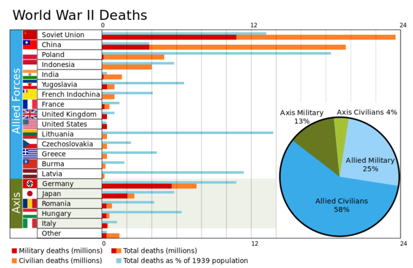
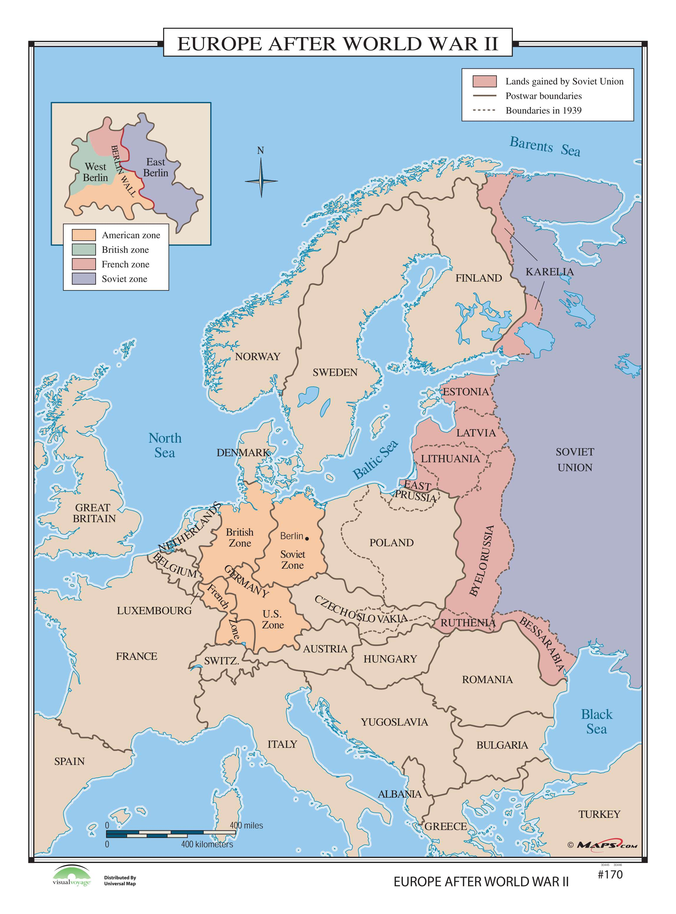
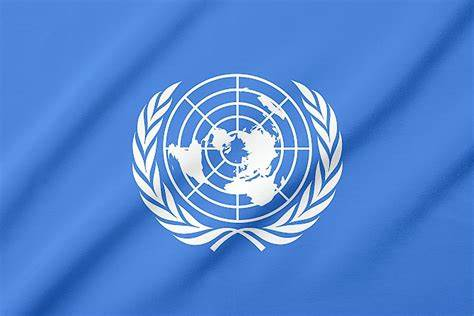
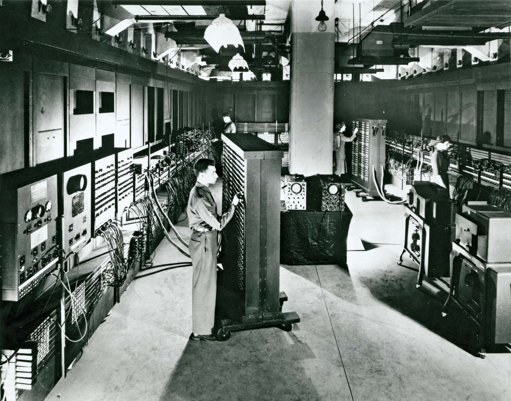

Impacto da Segunda Guerra Mundial na Sociedade
A Segunda Guerra Mundial teve um impacto profundo e duradouro na sociedade global. Aqui estão alguns dos principais efeitos:
1. Perdas Humanas
O conflito resultou na morte de aproximadamente 45 milhões de pessoas, incluindo civis e militares. A União Soviética, por exemplo, perdeu cerca de 20 milhões de pessoas.
2. Mudanças Geopolíticas
A guerra levou à redefinição das fronteiras e à criação de novas nações. A Alemanha foi dividida em zonas de ocupação e muitos países da Europa Oriental caíram sob a influência soviética.
3. Impacto Econômico
O custo econômico da guerra foi imenso, com perdas estimadas em 1 trilhão e 385 bilhões de dólares. A reconstrução pós-guerra levou anos e exigiu enormes investimentos.
4. Criação da ONU
Para evitar futuros conflitos, a Organização das Nações Unidas (ONU) foi criada em 1945, promovendo a cooperação internacional e a paz mundial.
5. Avanços Tecnológicos
A guerra acelerou o desenvolvimento de tecnologias, incluindo a aviação, a medicina e a computação. Muitos desses avanços tiveram aplicações civis significativas após o conflito.
